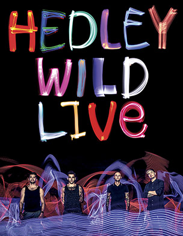

Hedley originally consisted of Jacob Hoggard, Kevin Giesbrecht, Kevin Heeres, Ryan Federau, and Brandon McKay. The band wrote many songs such as Gunnin' and Brave New World (which were later recorded by the current Hedley). The original band bet Jacob Hoggard $150 that he wouldn't make it into the top three for Canadian Idol. Hoggard proved them wrong making it to the top three before dropping out to be with his band.
Hedley's most recent tour that is currently ongoing is called the Wild Live Tour
Hedley is a Canadian pop-rock group originating in Abbotsford, British Columbia that formed in 2003. They were named after the unincorporated community of Hedley, British Columbia, a name chosen after members heard that it was for sale for $346,000.[4] Hedley is known for its singles "Never Too Late," "Cha-Ching" (performed at the closing ceremony of the 2010 Winter Olympics in Vancouver), "Invincible," and "Kiss You Inside Out", and for the band members' philanthropic work as ambassadors for the charity Free The Children.
Source: Hedley Wiki